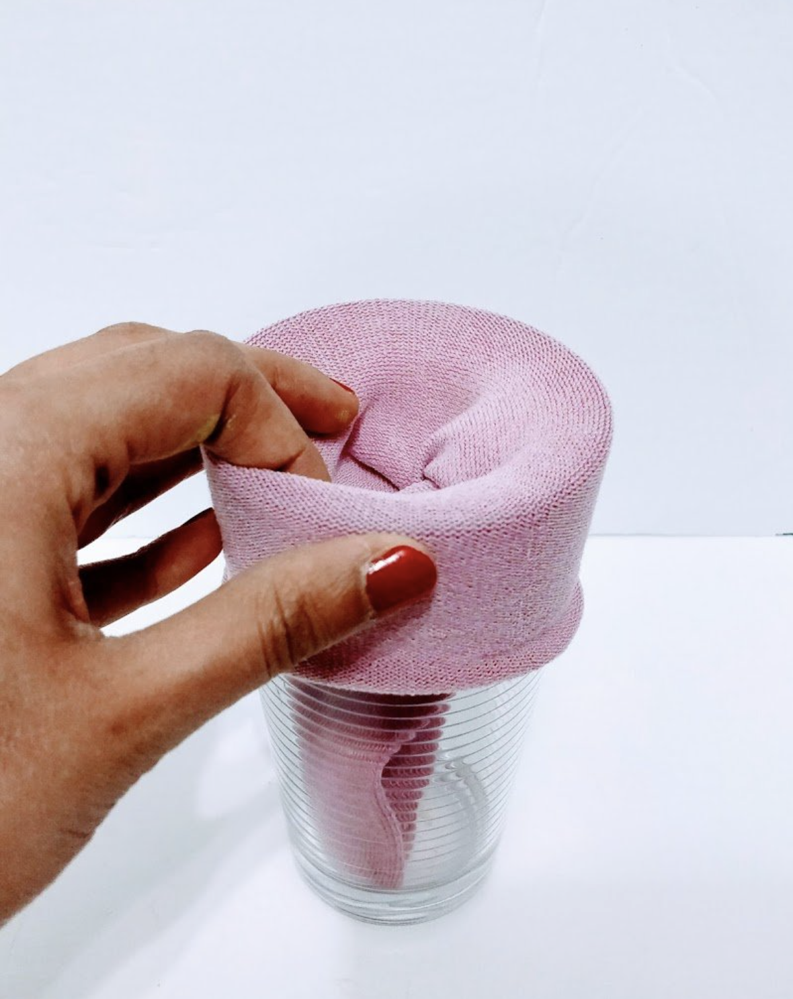
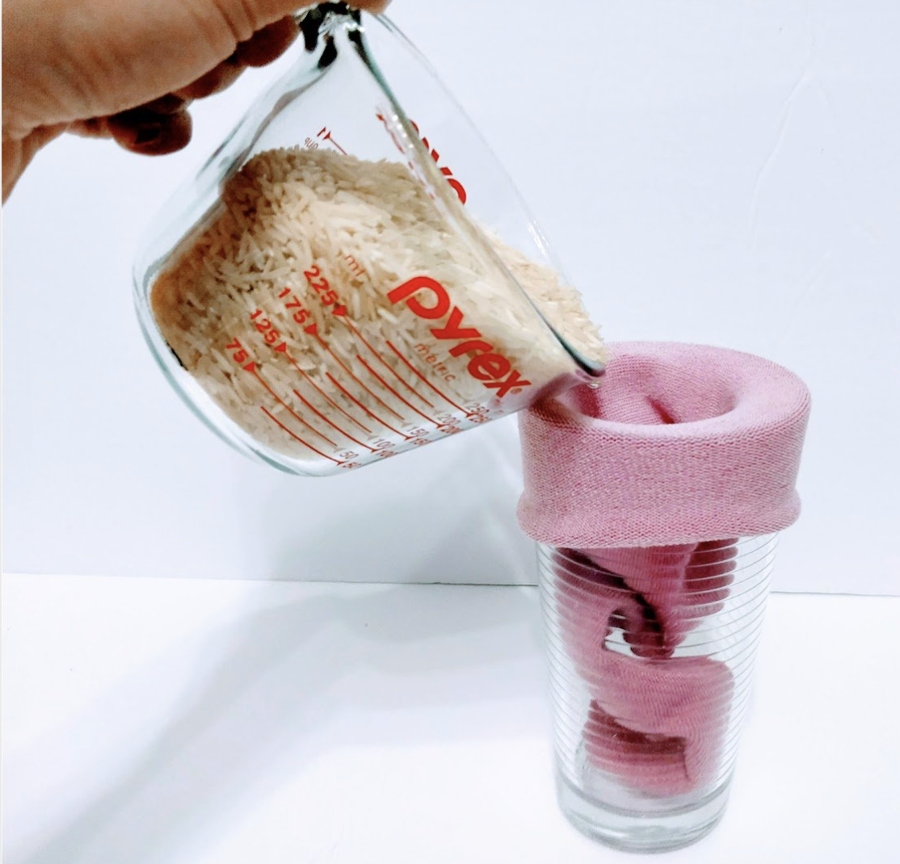
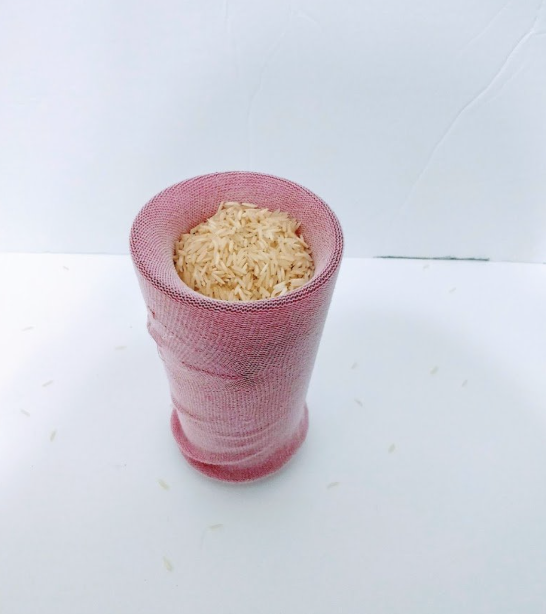
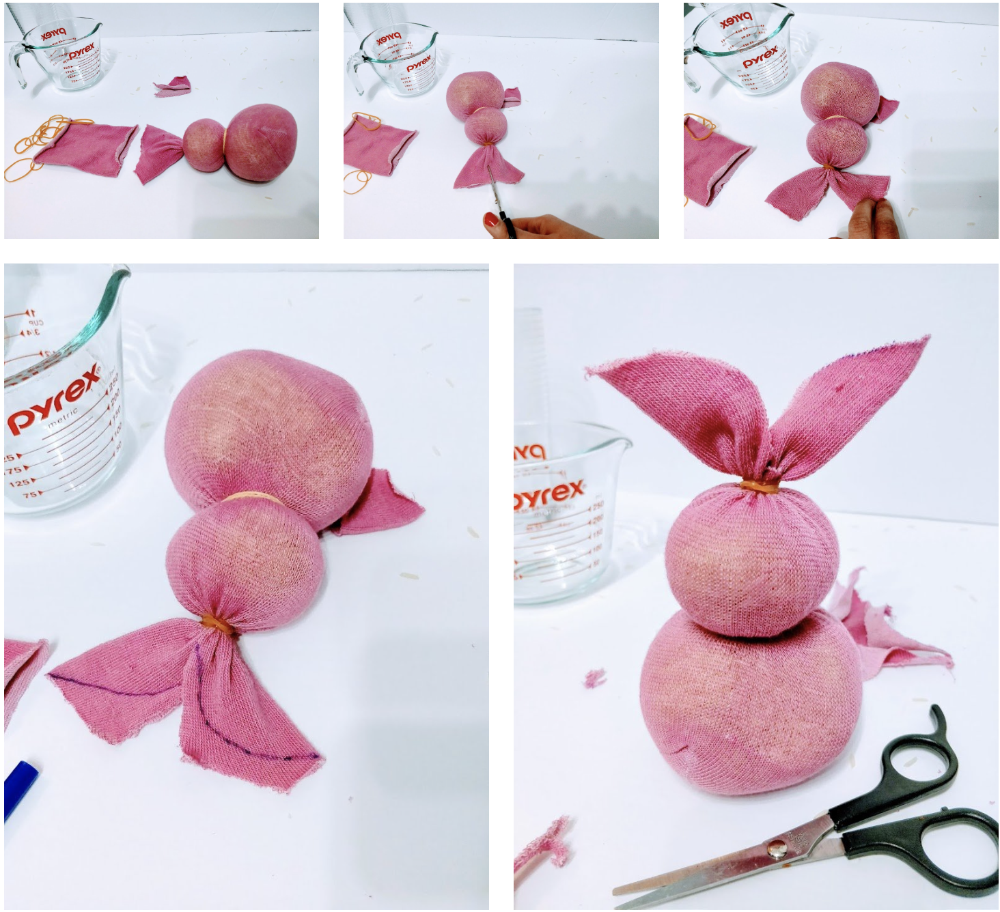
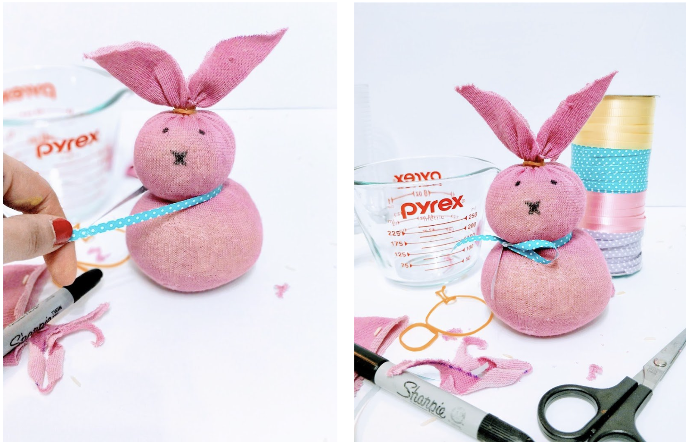

Place sock into a glass to pour the rice easily, fill until sock is full.
  Use one rubber band at the top (leave extra for the ears), one between the head and body,and use another to make a bunny tail. Once the shape is right cut the extra fabric to make two bunny ears.
Use a black marker to draw on a face and add ribbon for a bow to add the final touch, and your done!
